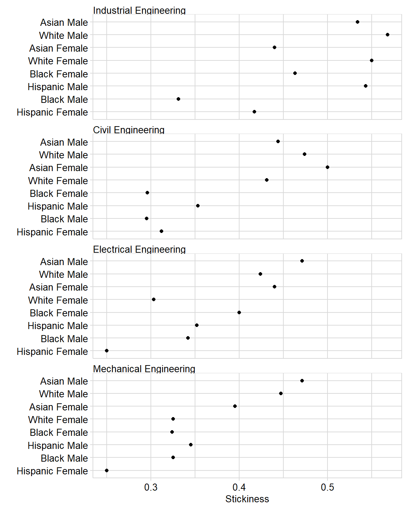
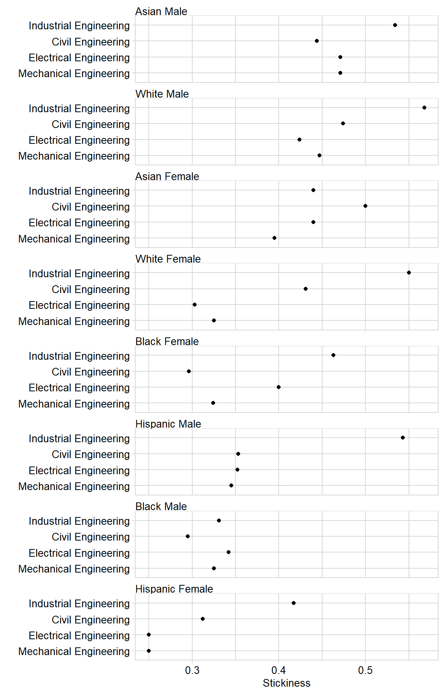

This article is written with novice R users in mind, so there is much detail that experienced users can skip.
Packages used in this article:
Many persistence metrics can be organized as multiway data in which there is is one quantitative variable and two categorical variables. To quote Bill Cleveland (1993),
the quantitative variable is a response, and the goal is to study how it depends on the categorical variables, which are factors. What distinguishes multiway data is the cross-classification of the categorical variables; there is a value of the response for each combination of levels of the two categorical variables.
We’ll use the stickiness metric to illustrate multiway graphs and data tables. Stickiness is the ratio of the number of students graduating in a program to the number of students ever enrolled in that program (Ohland et al. 2012).
case_stickiness is a sample dataset included with midfieldr:
# an example dataset
case_stickiness
#> # A tibble: 32 x 6
#> program race sex ever grad stick
#> <chr> <chr> <chr> <dbl> <dbl> <dbl>
#> 1 Civil Engineering Asian Female 22 11 0.5
#> 2 Civil Engineering Asian Male 54 24 0.444
#> 3 Civil Engineering Black Female 71 21 0.296
#> 4 Civil Engineering Black Male 132 39 0.295
#> 5 Civil Engineering Hispanic Female 16 5 0.312
#> 6 Civil Engineering Hispanic Male 85 30 0.353
#> 7 Civil Engineering White Female 445 192 0.431
#> 8 Civil Engineering White Male 1494 708 0.474
#> # ... with 24 more rowsThe stickiness value stick is the quantitative variable we want. One category is the academic program variable. The second category, race_sex, will have to be constructed by combining the race and sex variables.
We use:
str_c() to combine the two stringsmutate() to add a new columnselect() to select only the three columns needed for the multiway# combine two variables into one
stickiness <- case_stickiness %.>%
mutate(., race_sex = stringr::str_c(race, sex, sep = " ")) %.>%
select(., program, race_sex, stick) %.>%
glimpse(.)
#> Observations: 32
#> Variables: 3
#> $ program <chr> "Civil Engineering", "Civil Engineering", "Civil Engi...
#> $ race_sex <chr> "Asian Female", "Asian Male", "Black Female", "Black ...
#> $ stick <dbl> 0.500, 0.444, 0.296, 0.295, 0.312, 0.353, 0.431, 0.47...Our glimpse() of the data frame shows that we have two categorical variables and one quantitative variable, exactly the form needed.
multiway_order() transforms the character variables program and race_sex into factors and orders the levels of the two factors by the relevant medians.
# convert the data to a multiway structure
stickiness <- multiway_order(stickiness) %.>%
glimpse(.)
#> Observations: 32
#> Variables: 3
#> $ program <fct> Civil Engineering, Civil Engineering, Civil Engineeri...
#> $ race_sex <fct> Asian Female, Asian Male, Black Female, Black Male, H...
#> $ stick <dbl> 0.500, 0.444, 0.296, 0.295, 0.312, 0.353, 0.431, 0.47...glimpse() shows that the two categorical variables are factors.
Optionally, using the return_medians argument, the function returns the median values used in ordering the factors. By arranging the rows of the data frame by program and race_sex factors, we can see that they are ordered by the medians.
# return the median stickiness value for both categories
df <- multiway_order(stickiness, return_medians = TRUE) %.>%
arrange(., program, race_sex)
df
#> # A tibble: 32 x 5
#> program race_sex stick med_program med_race_sex
#> <fct> <fct> <dbl> <dbl> <dbl>
#> 1 Mechanical Engineering Hispanic Female 0.25 0.335 0.281
#> 2 Mechanical Engineering Black Male 0.325 0.335 0.328
#> 3 Mechanical Engineering Hispanic Male 0.345 0.335 0.352
#> 4 Mechanical Engineering Black Female 0.324 0.335 0.362
#> 5 Mechanical Engineering White Female 0.325 0.335 0.378
#> 6 Mechanical Engineering Asian Female 0.395 0.335 0.44
#> 7 Mechanical Engineering White Male 0.447 0.335 0.46
#> 8 Mechanical Engineering Asian Male 0.471 0.335 0.471
#> # ... with 24 more rowsThese values can be useful in discussion and for adding median reference lines to a graph.
We use conventional ggplot2 functions to create the multiway graphs. By previously ordering the levels of the factors, we have structured the data so that the rows and panels of the multiway graph are ordered by the appropriate medians.
For the novice R user, a brief description of the ggplot2 functions:
aes() assigns stick to the x-axis and race_sex to the y-axis.facet_wrap() conditions the plot by program, creating one panel (facet) per program.as.table = FALSE lays the panels out like a plot with the highest value at the top.geom_point() assigns point data markers.labs() assigns axis labels.theme_midfield() controls the appearance of the plot, based on a slightly edited theme_minimal().ggplot(data = stickiness, aes(x = stick, y = race_sex)) +
facet_wrap(~program, ncol = 1, as.table = FALSE) +
geom_point(na.rm = TRUE) +
labs(x = "Stickiness", y = "") +
theme_midfield()
As Cleveland notes, “We can more effectively compare values within a panel than values between panels.” This graph permits a direct visual comparison of how stickiness varies by race and sex for a particular major. .
The previous graph does not facilitate visual comparisons of members of the same race-sex group. As Cleveland says,
Because of this asymmetry, it is often important to explore multiway data by as many multiway dot plots as there are categorical variables, with each variable assigned once to the levels [rows of the panels].
To create the dual multiway graph, we swap the roles of the rows and panels. Where before we had
y = race_sex and facet_wrap(~ program...
now we have
y = program and facet_wrap(~ race_sex...
ggplot(stickiness, aes(x = stick, y = program)) +
facet_wrap(~race_sex, ncol = 1, as.table = FALSE) +
geom_point(na.rm = TRUE) +
labs(x = "Stickiness", y = "") +
theme_midfield()
This graph permits a direct visual comparison of how stickiness varies by major for one group of students.
When discussing the potential stories in multiway data, it is often convenient to have a data table at hand. Such tables facilitate discussion and are occasionally appropriate to include in a publication for editors or reviewers who want to see the exact values underlying the data graphics.
Starting with the example data, the first thing to do before tabulating is to reduce the significant figure to an easily-read number and arrange the rows to facilitate looking up a number.
stickiness_table <- case_stickiness %.>%
mutate(., stick = round(stick, 2)) %.>%
arrange(., program, sex, race)In many cases we might stop here and print the table for discussion purposes.
| program | race | sex | ever | grad | stick |
|---|---|---|---|---|---|
| Civil Engineering | Asian | Female | 22 | 11 | 0.50 |
| Civil Engineering | Black | Female | 71 | 21 | 0.30 |
| Civil Engineering | Hispanic | Female | 16 | 5 | 0.31 |
| Civil Engineering | White | Female | 445 | 192 | 0.43 |
| Civil Engineering | Asian | Male | 54 | 24 | 0.44 |
| Civil Engineering | Black | Male | 132 | 39 | 0.30 |
| Civil Engineering | Hispanic | Male | 85 | 30 | 0.35 |
| Civil Engineering | White | Male | 1494 | 708 | 0.47 |
| Electrical Engineering | Asian | Female | 50 | 22 | 0.44 |
| Electrical Engineering | Black | Female | 180 | 72 | 0.40 |
| Electrical Engineering | Hispanic | Female | 24 | 6 | 0.25 |
| Electrical Engineering | White | Female | 244 | 74 | 0.30 |
| Electrical Engineering | Asian | Male | 255 | 120 | 0.47 |
| Electrical Engineering | Black | Male | 380 | 130 | 0.34 |
| Electrical Engineering | Hispanic | Male | 91 | 32 | 0.35 |
| Electrical Engineering | White | Male | 1645 | 698 | 0.42 |
| Industrial Engineering | Asian | Female | 50 | 22 | 0.44 |
| Industrial Engineering | Black | Female | 121 | 56 | 0.46 |
| Industrial Engineering | Hispanic | Female | 12 | 5 | 0.42 |
| Industrial Engineering | White | Female | 313 | 172 | 0.55 |
| Industrial Engineering | Asian | Male | 88 | 47 | 0.53 |
| Industrial Engineering | Black | Male | 151 | 50 | 0.33 |
| Industrial Engineering | Hispanic | Male | 35 | 19 | 0.54 |
| Industrial Engineering | White | Male | 623 | 354 | 0.57 |
| Mechanical Engineering | Asian | Female | 38 | 15 | 0.40 |
| Mechanical Engineering | Black | Female | 105 | 34 | 0.32 |
| Mechanical Engineering | Hispanic | Female | 20 | 5 | 0.25 |
| Mechanical Engineering | White | Female | 434 | 141 | 0.32 |
| Mechanical Engineering | Asian | Male | 174 | 82 | 0.47 |
| Mechanical Engineering | Black | Male | 268 | 87 | 0.32 |
| Mechanical Engineering | Hispanic | Male | 113 | 39 | 0.34 |
| Mechanical Engineering | White | Male | 2611 | 1166 | 0.45 |
Were to include a table in a publication, we might choose to
program variable to avoid repeating the term “Engineering”stickiness_table <- stickiness_table %.>%
select(., program, race, sex, stick) %.>%
mutate(., program = str_replace(program, " Engineering", "")) %.>%
select(.,
"Program" = program,
"Race" = race,
"Sex" = sex,
"Stickiness" = stick
) %.>%
spread(., Program, Stickiness) %.>%
arrange(., Sex, Race)And print the table to our output document.
| Race | Sex | Civil | Electrical | Industrial | Mechanical |
|---|---|---|---|---|---|
| Asian | Female | 0.50 | 0.44 | 0.44 | 0.40 |
| Black | Female | 0.30 | 0.40 | 0.46 | 0.32 |
| Hispanic | Female | 0.31 | 0.25 | 0.42 | 0.25 |
| White | Female | 0.43 | 0.30 | 0.55 | 0.32 |
| Asian | Male | 0.44 | 0.47 | 0.53 | 0.47 |
| Black | Male | 0.30 | 0.34 | 0.33 | 0.32 |
| Hispanic | Male | 0.35 | 0.35 | 0.54 | 0.34 |
| White | Male | 0.47 | 0.42 | 0.57 | 0.45 |
Cleveland, William S. 1993. Visualizing Data. Summit, NJ: Hobart Press.
Ohland, Matthew, Marisa Orr, Richard Layton, Susan Lord, and Russell Long. 2012. “Introducing Stickiness as a Versatile Metric of Engineering Persistence.” In Proceedings of the Frontiers in Education Conference, 1–5.